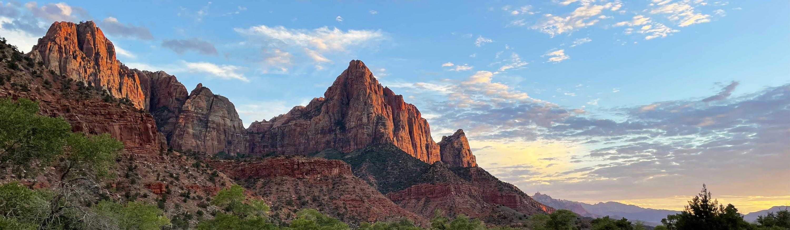

Top Utah Sites
Throughout my childhood, my family and I would travel from Kansas to visit the beautiful nature of southern Utah. Here I would like to share some of my favorite places in Utah with you!
- Zion National Park
- Has some of the prettiest views you can find anywhere
- Very popular and can be crowded
- Angel's Landing is one of the most popular hikes and has incredible views
- One popular hike, the narrows, is often closed due to flooding
- Arches National Park
- Includes over 2,000 documented arches
- Densest concentration of arches in the whole world
- Also busy, often large crowds on the more popular hikes
- Goblin Valley State Park
- Hudus to climb around (great for families with kids!!)
- Near Little Wildhorse, a fun slot canyon to hike
- Fun camping grounds nearby
- Dead Horse Point State Park
- Great 360 degree views
- No hiking, just drive up to parking lot
- Peek-a-boo Slot Canyon
- Fun slot canyons to hike
- Lots of fun climbing
- Very remote
